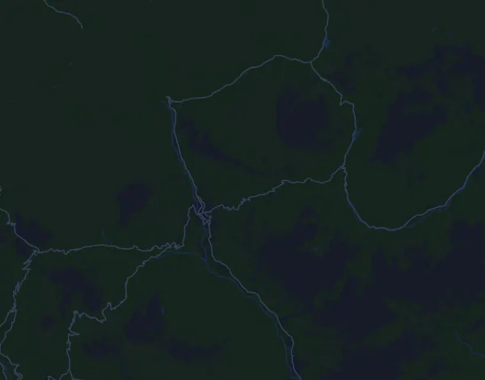

Lavaredo Ultra Trail by UTMB – Lavaredo 120K
- Distance
- 120 km
- Elevation gain
- ↑ 5,457 m
- Highest point
- 2,451 m a.s.l.
- Surface
- Trail
- Profile
- Very hilly
- Start
- 23:00
- Aid stations
- 2
Elevation profile
Prepare with Mila
Mila is a running coach app. Add a race to your plan and the coach plans your weeks up to race day around your form, and gives you a finish-time forecast and a plan for pacing, drinks and fuel on the course.

The right run, on the right day.
The course

About the course
La Sportiva Lavaredo Ultra Trail by UTMB – Lavaredo 120K is a trail race in Cortina d'Ampezzo, Italy, over 120 km. The course climbs 5,457 m and descends 5,440 m in total, 45 m per km, which makes it very hilly. The highest point is 2,451 m above sea level and the lowest 1,217 m.
The biggest climb starts at km 83.6: 732 m of ascent over 7.6 km at 9.6 % on average, up to 2,326 m. In total the course has 24 climbs of at least 25 m; the last one starts at km 107.1.
The organizer lists 2 aid stations, the first at km 48.0 and the last at km 89.0.
In the Mila app, the coach describes the course in detail in your language and plans your pacing and fueling for it.
Climbs
| Starts at | Length | Gain | Gradient | Top (m above sea level) |
|---|---|---|---|---|
| km 0.0 | 1.8 km | 46 m | 2.6 % | 1,264 |
| km 1.8 | 5.4 km | 512 m | 9.5 % | 1,774 |
| km 14.0 | 2.2 km | 137 m | 6.1 % | 1,484 |
| km 16.9 | 3.4 km | 241 m | 7.1 % | 1,705 |
| km 20.4 | 4.7 km | 410 m | 8.8 % | 2,111 |
| km 28.9 | 1 km | 39 m | 3.8 % | 1,799 |
| km 33.1 | 4.6 km | 502 m | 10.9 % | 1,904 |
| km 38.6 | 970 m | 29 m | 3.0 % | 1,895 |
| km 42.3 | 2.7 km | 107 m | 3.9 % | 1,876 |
| km 45.2 | 2.3 km | 207 m | 9.1 % | 2,079 |
| km 47.5 | 1.6 km | 239 m | 15.1 % | 2,316 |
| km 49.6 | 2 km | 141 m | 7.0 % | 2,451 |
| km 60.8 | 5.7 km | 114 m | 2.0 % | 1,544 |
| km 67.3 | 4.9 km | 493 m | 10.0 % | 2,021 |
| km 78.5 | 280 m | 25 m | 8.9 % | 1,548 |
| km 80.4 | 3.2 km | 231 m | 7.2 % | 1,595 |
| km 83.6 | 7.6 km | 732 m | 9.6 % | 2,326 |
| km 93.5 | 1.4 km | 119 m | 8.7 % | 2,185 |
| km 96.7 | 1.2 km | 178 m | 14.6 % | 2,177 |
| km 98.0 | 1.8 km | 247 m | 13.7 % | 2,415 |
| km 100.8 | 450 m | 32 m | 7.1 % | 2,287 |
| km 101.3 | 970 m | 29 m | 3.0 % | 2,314 |
| km 104.6 | 960 m | 163 m | 17.1 % | 2,360 |
| km 107.1 | 1.2 km | 88 m | 7.6 % | 2,286 |
Before the start
Aid stations
| At | What's there |
|---|---|
| km 48.0 | water |
| km 89.0 | water |
Start times
- 23:00
Source: lavaredo.utmb.world, retrieved 24 November 2026
Frequently asked questions
When is Lavaredo Ultra Trail by UTMB – Lavaredo 120K?
Lavaredo Ultra Trail by UTMB – Lavaredo 120K takes place on Friday, 25 June 2027. Check the date and start time with the organizer.
What time does Lavaredo Ultra Trail by UTMB – Lavaredo 120K start?
According to the organizer: 23:00.
How long is Lavaredo Ultra Trail by UTMB – Lavaredo 120K and how much climbing is there?
The race is 120 km with 5,457 m of climbing and 5,440 m of descent. The highest point is 2,451 m above sea level.
What is the course of Lavaredo Ultra Trail by UTMB – Lavaredo 120K like?
The course is very hilly, with 45 m of climbing per km on average. It has 24 climbs of at least 25 m; the biggest starts at km 83.6: 732 m over 7.6 km. Start and finish are in the same place. The surface is trail.
Are there aid stations at Lavaredo Ultra Trail by UTMB – Lavaredo 120K?
Yes. The organizer lists 2 aid stations: km 48.0 (water); km 89.0 (water).
How should I pace Lavaredo Ultra Trail by UTMB – Lavaredo 120K?
Aim for an even effort rather than an even pace: let the pace drop on the climbs, win it back where it levels out, and hold back in the first kilometres. The biggest climbs start at km 1.8, km 33.1, km 67.3 and km 83.6. In Mila you get a pace plan for this course, based on your own form.
More races like this
More races nearby
- DoloMyths Run SkyRace (22 km)11 July 2027 · Canazei, Italy
- TOR330 - Tor des Géants 328 km12 September 2027 · Courmayeur, Italy
- Wizz Air Milano Marathon 42.2 km4 April 2027 · Milano, Italy
- Chianti Ultra Trail by UTMB – Ultra Trail Chianti Castles (UTCC 120K)20 March 2027 · Radda in Chianti, Italy
- Run Rome The Marathon 42.2 km14 March 2027 · Roma, Italy
- RomaOstia Half Marathon 21 km28 February 2027 · Roma, Italy
Prepare with Mila
The right run, on the right day.
Details come from the course file and the organizer's information. Check the date, start times and rules with the organizer.
Mila is not affiliated with, sponsored by or endorsed by the organizer or the race's sponsors. Names and trademarks belong to their owners. Organizer or rights holder? Ask for a change or a removal